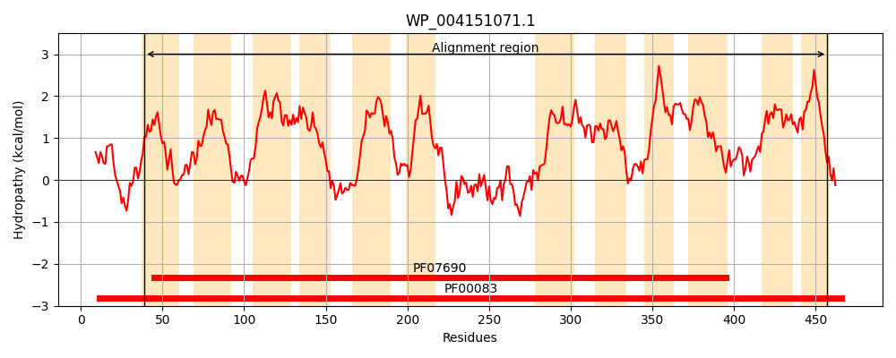
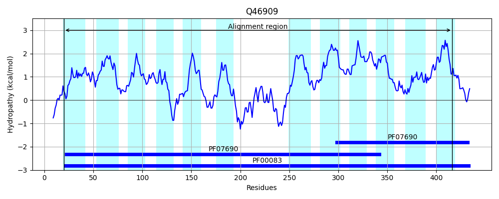
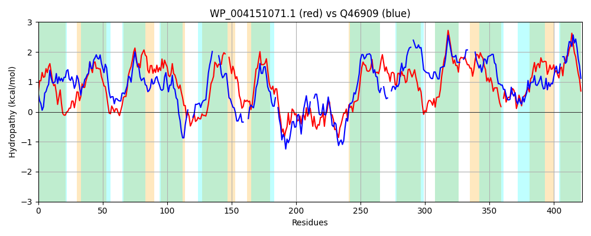

Hit Accession: Q46909
Hit TCID: 2.A.1.1.95
Hit Description: gnl|BL_ORD_ID|13695 gnl|TC-DB|Q46909|2.A.1.1.95 Inner membrane metabolite transport protein ygcS OS=Escherichia coli (strain K12) GN=ygcS PE=1 SV=2
Mach Len: 422
e:0.000000
Query TMS Count : 12
Hit TMS Count: 12
TMS-Overlap Score: 9.050000
Predicted Substrates:CHEBI:25212;metabolite
BLAST Alignment:
Score: 394 , Bit scores: 156 bits, E-value: 1.2e-42, Alignment length: 422, Percentage identity: 30
Query: 39 IVFLALGGVFLDAYDLTTLSYGIDDVVREFQLSPLLTGLVTSSIMVGTIVGNIIGGWLTDKYGRYSVFMADMFFFVISAIAAGLAPNVWVLIGARFLMGIGVGIDLPVAMSYLAEFSRFAGKGNKAARLAAWCPMWYAASTVCFLI--IFGLYFLLPQEHLDWLWRASLLFGAVPALLIIAVRSRFMNESPLWAANQGDLTSAVRILRDSWGIHAHEVPAAKPAPAPKVSFRVLFEKPYRERTIVAGVMNICISFEYTAIAFFLPSILAQFLGAGVFETISASLGLNALFAFTGGLLGMHLAWKYPSRHVAIAGFALQFVALIVLALVGQPHATAGIVLAIAMLGLWLFAEGFGPGAQLM-IYPALSYPTAIRATGVGFSRALSGIGSALALFILPLLQASLGTQMFWVVSLAAIIPIFFLL 457
I L G D Y L + Y I + QL+P + G++ S ++G +G+++ GW++D GR +F +++ A LIG R L+GIG+G D V + LAEFS + ++ L A+ +W TV +++ I G +F+ WR L A+PALLI +R ESP W QG A I+ +G H + + A + LF Y RT V +C+ + I +LP+I AQ + G+ + ++ASL LNAL G LLG+ L R + F L L+V+A + P + ++ +L LF+ + L+ I PA S+PT IR+ GVGF+ A+S +G+A++ +LP + A G Q+ ++ LA ++ + F++
Sbjct: 20 IAALTFGAHLTDGYVLGVIGYAIIQLTPAMQLTPFMAGMIGGSALLGLFLGSLVLGWISDHIGRQKIFTFSFLLITLASFLQFFATTPEHLIGLRILIGIGLGGDYSVGHTLLAEFS---PRRHRGILLGAFSVVW----TVGYVLASIAGHHFISENPE---AWRWLLASAALPALLITLLRWG-TPESPRWLLRQGRFAEAHAIVHRYFG--PHVLLGDEVVTATHKHIKTLFSSRYWRRTAFNSVFFVCLVIPWFVIYTWLPTI-AQTI--GLEDALTASLMLNALL-IVGALLGLVLTHLLAHRKFLLGSFLLLAATLVVMACL--PSGS-----SLTLLLFVLFSTTISAVSNLVGILPAESFPTDIRSLGVGFATAMSRLGAAVSTGLLPWVLAQWGMQV-TLLLLATVLLVGFVV 416 | Protein Hydropathy Plots: |
|---|
|  |  |
Pairwise Alignment-Hydropathy Plot:
|
|---|
|  |